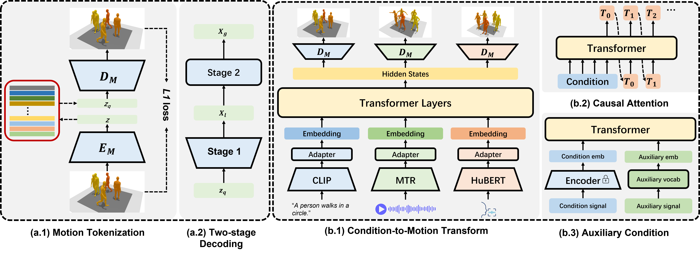

A Unified Framework for Multimodal, Multi-Part Human Motion Synthesis

In this work, we propose a unified human motion generation model that accepts three distinct modalities, and enables the synthesis of diverse body part motions.
Abstract
The field has made significant progress in synthesizing realistic human motion driven by various modalities. Yet, the need for different methods to animate various body parts according to different control signals limits the scalability of these techniques in practical scenarios. In this paper, we introduce a cohesive and scalable approach that consolidates multimodal (text, music, speech) and multi-part (hand, torso) human motion generation. Our methodology unfolds in several steps: We begin by quantizing the motions of diverse body parts into separate codebooks tailored to their respective domains. Next, we harness the robust capabilities of pre-trained models to transcode multimodal signals into a shared latent space. We then translate these signals into discrete motion tokens by iteratively predicting subsequent tokens to form a complete sequence. Finally, we reconstruct the continuous actual motion from this tokenized sequence. Our method frames the multimodal motion generation challenge as a token prediction task, drawing from specialized codebooks based on the modality of the control signal. This approach is inherently scalable, allowing for the easy integration of new modalities. Extensive experiments demonstrated the effectiveness of our design, emphasizing its potential for broad application.
Video
Overview

The overview of our method.
Hierarchical torso VQ-VAE:
1. Encode the relative trajectory instead of global trajectory.
2. Decode the discrete tokens to local poses(1st stage).
3. Estimate sub-optimal global poses.
4. Refine to obtain the final global poses(2nd stage).
5. Introduce weights re-initialization to improve tokens activation rate.
Multimodal Multi-Part Motion Generation
1. Use large-scale pretrained models as encoders: 1) CLIP text encoder, 2) MTR, 3) HuBERT.
2. Use encoder-decoder architecture to transform multimodal condition to motion tokens.
3. Accept auxiliary condition as learnable embeddings.
4. Introduce semantic enhancement module to align semantic between condition and motion.
5. Introduce semantic-aware sampling to improve condition consistency while maintaining synthesis diversity.